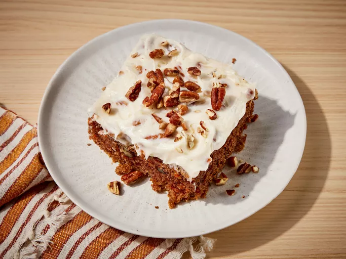

Carrot Cake
Home

Recipe to make Carrot Cake
In this recipe we will be making Carrot Cake, a simple and juicy cake.
Ingredients
Cake:
- 2 cups white sugar
- 1 1/4 cups vegetable oil
- 4 large eggs
- 2 teaspoons vanilla extract
- 2 cups all-purpose flour
- 2 teaspoons baking soda
- 2 teaspoons baking powder
- 2 teaspoons ground cinnamon
- 1/2 teaspoon salt
- 3 cups grated carrots
- 1 cup chopped pecans (optional)
Frosting:
- 4 cups confectioners' sugar
- 8 ounces cream cheese, softened
- 1/2 cup butter, softened
- 1 teaspoons vanilla extract
- 1 cup chopped pecans (optional)
Steps
- Gather all ingredients. Preheat the oven to 350°F (175°C). Grease and flour a 9x13 inch pan.
- Beat white sugar, oil, eggs, and 2 teaspoons vanilla together in a large bowl with an electric mixer until well combined.
- Mix in flour, baking soda, baking powder, cinnamon, and salt; stir in carrots, then fold in 1 cup pecans.
- Pour into the prepared pan.
- Bake in the preheated oven until a toothpick inserted into the center comes out clean, about 40 minutes.
Cool in the pan for 10 minutes, then turn out onto a wire rack and cool completely.
- Beat confectioners' sugar, cream cheese, butter, and 1 teaspoon vanilla together in a large bowl with an electric mixer until frosting is smooth an creamy.
- Stir in 1 cup chopped pecans.
- Frost cooled cake. Serve and enjoy!
Home